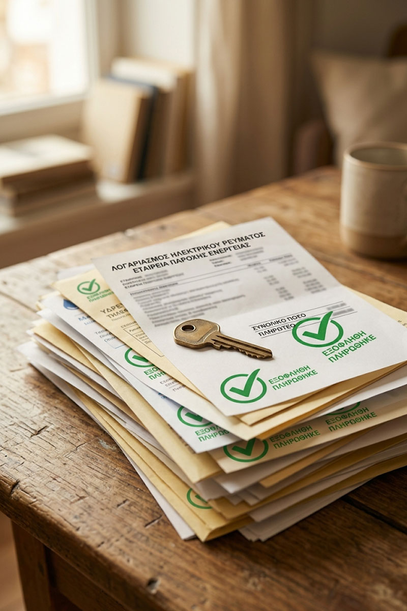

Αντικείμενο
Υπερχρεωμένα Νοικοκυριά
Ένα νέο οικονομικό ξεκίνημα είναι πάντα εφικτό.
«Ένα νέο οικονομικό ξεκίνημα δεν είναι όνειρο — είναι δικαίωμα.»
Η οικονομική δυσπραγία δεν είναι ατομική αποτυχία — είναι μια κατάσταση που ο νόμος αναγνωρίζει και για την οποία προβλέπει συγκεκριμένες λύσεις. Ο Ν. 3869/2010, γνωστός και ως "νόμος Κατσέλη", δίνει σε φυσικά πρόσωπα σε μόνιμη αδυναμία πληρωμής τη δυνατότητα να ρυθμίσουν τις οφειλές τους με ρεαλιστικούς όρους.
Αναλαμβάνουμε την πλήρη διαδικασία, από την κατάθεση αίτησης στο Ειρηνοδικείο και την εξασφάλιση προσωρινής διαταγής προστασίας, έως τη δικαστική ρύθμιση των οφειλών και, όπου είναι δυνατόν, την προστασία της κύριας κατοικίας από πλειστηριασμό.
Γνωρίζουμε πόσο βαρύ ψυχολογικά είναι το άγχος της υπερχρέωσης, και προσεγγίζουμε κάθε υπόθεση με διακριτικότητα και κατανόηση, χωρίς καμία κρίση για τις συνθήκες που οδήγησαν σε αυτήν. Ο στόχος μας είναι πάντα η ανακούφιση, όχι μόνο η τυπική διεκπεραίωση μιας αίτησης.
Πέρα από τη δικαστική ρύθμιση, εξετάζουμε και τη δυνατότητα εξωδικαστικού συμβιβασμού με τους πιστωτές, όπου αυτό μπορεί να προσφέρει ταχύτερη και λιγότερο επαχθή λύση, προσαρμοσμένη στις πραγματικές δυνατότητες του κάθε νοικοκυριού.

Προσωρινή Προστασία
Άμεση αίτηση προσωρινής διαταγής που αναστέλλει καταδιωκτικά μέτρα κατά της περιουσίας σας.
Ρύθμιση Οφειλών
Διαμόρφωση σχεδίου αποπληρωμής προσαρμοσμένου στις πραγματικές οικονομικές σας δυνατότητες.
Προστασία Κατοικίας
Διεκδίκηση εξαίρεσης της πρώτης κατοικίας από ρευστοποίηση, όπου προβλέπεται από τον νόμο.
Συχνές ερωτήσεις για τα υπερχρεωμένα νοικοκυριά
Ό,τι χρειάζεται να γνωρίζετε πριν κάνετε αίτηση ρύθμισης οφειλών.
Ποιος μπορεί να υπαχθεί στον Ν. 3869/2010;
Φυσικά πρόσωπα χωρίς πτωχευτική ικανότητα (δηλαδή όχι έμποροι) που βρίσκονται σε μόνιμη και γενική αδυναμία πληρωμής των ληξιπρόθεσμων οφειλών τους.
Τι προστασία παρέχει η προσωρινή διαταγή;
Αναστέλλει καταδιωκτικά μέτρα (κατασχέσεις, πλειστηριασμούς) εναντίον του οφειλέτη μέχρι την έκδοση οριστικής απόφασης επί της αίτησης ρύθμισης.
Χάνω σίγουρα το σπίτι μου αν κάνω αίτηση;
Όχι απαραίτητα — ο νόμος προβλέπει, υπό προϋποθέσεις εισοδήματος και περιουσίας, δυνατότητα εξαίρεσης της κύριας κατοικίας από τη ρευστοποίηση, με ρύθμιση της αντίστοιχης οφειλής σε δόσεις.
Πόσο διαρκεί η διαδικασία ρύθμισης;
Από την κατάθεση της αίτησης έως την οριστική δικαστική απόφαση μπορεί να μεσολαβήσει αρκετός χρόνος λόγω φόρτου δικαστηρίων, όμως η προσωρινή προστασία ισχύει σχεδόν άμεσα.
Ποια στοιχεία χρειάζομαι για την αίτηση;
Πλήρη εικόνα οφειλών, εισοδημάτων, περιουσιακών στοιχείων και οικογενειακής κατάστασης. Η προσεκτική προετοιμασία του φακέλου είναι καθοριστική για την έκβαση.
Ισχύει η ρύθμιση για όλα τα είδη χρεών;
Καλύπτει τραπεζικά δάνεια, κάρτες, καταναλωτικά δάνεια και άλλες ιδιωτικές οφειλές. Ορισμένες οφειλές προς το Δημόσιο ρυθμίζονται με ειδικούς όρους.